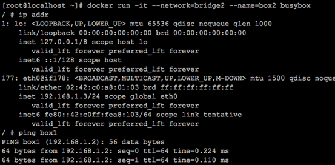
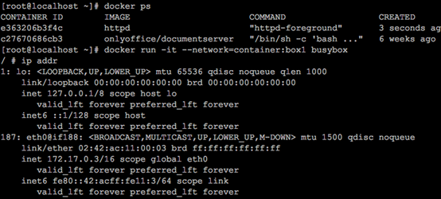
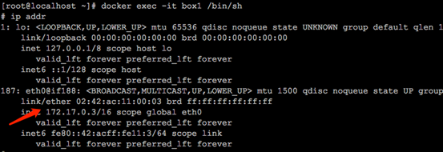
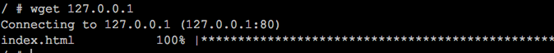

Docker网络和容器的通信 参考博客
容器之间的通信
容器之间可通过 IP，Docker DNS Server 和joined 容器三种方式通信。
IP 通信
两个容器要能通信，必须要有属于同一个网络的网卡。满足这个条件后，容器就可以通过 IP 交互了。具体做法是在容器创建时通过 --network 指定相应的网络，或者通过 docker network connect 将现有容器加入到指定网络。
Docker DNS Server
通过 IP 访问容器虽然满足了通信的需求，但还是不够灵活。因为我们在部署应用之前可能无法确定 IP，部署之后再指定要访问的 IP 会比较麻烦。对于这个问题，可以通过 docker 自带的 DNS 服务解决。
从 Docker 1.10 版本开始，docker daemon 实现了一个内嵌的 DNS server，使容器可以直接通过"容器名"通信。方法很简单，只要在启动时用 --name 为容器命名就可以了。
下面启动两个容器 box1 和 box2，并且在上面定义的网络模式bridge2中：
docker run -it --network=bridge2 --name box1 busybox
docker run -it --network=bridge2 --name box2 busybox
box2和 box1可以互ping通

使用 docker DNS 有个限制：只能在 user-defined 网络中使用。也就是说，默认的 bridge 网络是无法使用 DNS 的。
joined 容器
joined 容器是另一种实现容器间通信的方式。它可以使两个或多个容器共享一个网络栈，共享网卡和配置信息，joined 容器之间可以通过 127.0.0.1 直接通信。例：
先创建一个http容器，名字为 box1
docker run -it --name box1 http
然后创建 busybox 容器并通过 --network=container:box1 指定 jointed 容器为 box1：
docker run -it --network=container:box1 busybox

box1 的网络：

busybox 和 box1 的网卡 mac 地址与 IP 完全一样，它们共享了相同的网络栈。busybox 可以直接用 127.0.0.1 访问 box1 的 http 服务。

joined 容器非常适合以下场景：
不同容器中的程序希望通过 loopback 高效快速地通信，比如 web server 与 app server。
希望监控其他容器的网络流量，比如运行在独立容器中的网络监控程序。